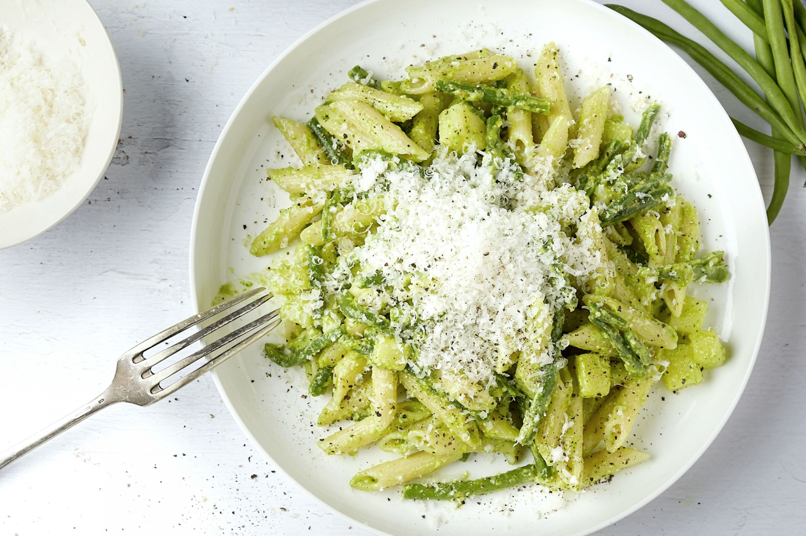

pasta gremolata met ricitta

ingredienten
- 500 g farfalle
- 1 el pijnboompitten
- 1 teentje knoflook
- 1 citroenschil
- 250 g ricitta
- Handje bladpeterselie
Bereiding
- Kook de pasta beetgaar in een ruimte hoeveelheid gezouten water
- snipper de peterselie en de knoflook. vermeng ze met de geraspte citroenschil
- schep de ricotta door de warme pasta en verdeel over de borden. Bestrooi met gremolata en werk af met de pijnboompitten.